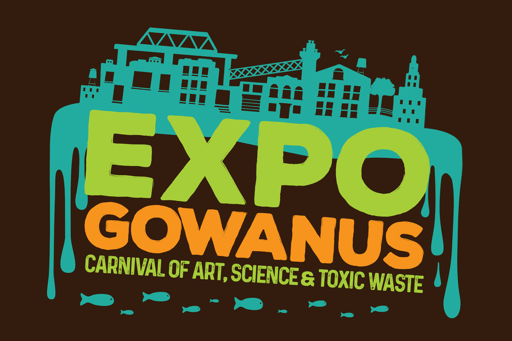

<html>
<head>
	<title>GeoreferencedWebmaps</title>

	<link rel="stylesheet"  href="css/leaflet.css"/>
  <link rel="stylesheet"  href="css/leaflet-extras.css"/>
	<link rel="stylesheet" href="css/commons.css"/>

	<script src="js/leaflet.js"></script>

	<script src="js/jquery-2.1.1.min.js">  </script>

	<style>
	#map{position:absolute; top:0; bottom:0; left:0; width: 100%;}
	</style>


</head>
<body>

	<div id="map"></div>

	<script>
//initializing the map
	var map = L.map('map').setView([40.676105,-73.989937], 14);

//add background tile layers
	L.tileLayer('http://tile.stamen.com/toner-lite/{z}/{x}/{y}.png',
		{
			// attribution: 'Tiles from <a href="http://www.openstreetmap.org/">OSM by Stamen Design</a>',
		maxZoom: 19,
		minZoom: 1
		}).addTo(map);
//
//
// //link to the historical map image
// 	var imageUrl = 'data/BronxMap.png';
//
// //define the area that image covers
// 	var imageBounds = [[40.8846829955, -73.8978315922], [40.8290586719, -73.8201512858]];
//
// //add georeferenced historical map
// 	L.imageOverlay(imageUrl, imageBounds, {opacity: 0.8}).addTo(map);
//
//
// //load GeoJSON file containing roads, and style lines
//   	$.getJSON('data/RoadLines.geojson',function(roadsData){
// 	    L.geoJson(roadsData, {
// 	    	color: "#ff7800",
// 	    	weight: 3.5,
// 	    	opacity: 0.65,
// 	    	onEachFeature: road_annon
// 	    }).addTo(map);
// 	    });
//
// //define popup content for road annotations
//  	var road_annon = function onEachFeature(feature, layer) {
// 	    if (feature.properties && feature.properties.Descr) {
// 	    	var roadsPopup = feature.properties.Descr;
// 	        layer.bindPopup(roadsPopup);
// 	    }
// 	}
//
var dotIconorig = L.icon({
    iconUrl: 'img/marker-02.png',
    // shadowUrl: 'leaf-shadow.png',

    iconSize:     [10, 10], // size of the icon
    // shadowSize:   [50, 64], // size of the shadow
    // iconAnchor:   [20, 20], // point of the icon which will correspond to marker's location
    // shadowAnchor: [4, 62],  // the same for the shadow
    popupAnchor:  [-3, -76] // point from which the popup should open relative to the iconAnchor
});
//
// var dotIcon = L.Icon.extend({
//     // iconUrl: 'marker-01.png',
//     // shadowUrl: 'leaf-shadow.png',
//
//     iconSize:     [1, 1], // size of the icon
//     // shadowSize:   [50, 64], // size of the shadow
//     // iconAnchor:   [20, 20], // point of the icon which will correspond to marker's location
//     // shadowAnchor: [4, 62],  // the same for the shadow
//     popupAnchor:  [-3, -76] // point from which the popup should open relative to the iconAnchor
// });
//
// var dotIconM = new dotIcon({iconUrl: 'img/marker-01.png'}),
//     dotIconY = new dotIcon({iconUrl: 'img/marker-02.png'}),
//     dotIconK = new dotIcon({iconUrl: 'img/marker-03.png'}),
//     dotIconC = new dotIcon({iconUrl: 'img/marker-04.png'});

//
// L.marker([40.678871,-73.982813], {icon: dotIconorig}).addTo(map);
// L.marker([40.681412, -73.989229], {icon: dotIconorig}).addTo(map);
// L.marker([40.677115, -73.992362], {icon: dotIconorig}).addTo(map);
// L.marker([40.672492, -73.990130], {icon: dotIconorig}).addTo(map);
// L.marker([40.680537, -73.983187], {icon: dotIconorig}).addTo(map);
var culturalStyle = {
	radius: 6,
	fillColor: "#00aeef",
	color: "#00aeef",
	weight: 1,
	opacity: 1,
	fillOpacity: 0.9,
};
L.circleMarker([40.678871,-73.982813], culturalStyle).addTo(map);
L.circleMarker([40.681412, -73.989229], culturalStyle).addTo(map);
L.circleMarker([40.677115, -73.992362], culturalStyle).addTo(map);
L.circleMarker([40.672492, -73.990130], culturalStyle).addTo(map);
L.circleMarker([40.680537, -73.983187], culturalStyle).addTo(map);


function onEachFeature(feature,layer){
	var popupContent = "<p class = 'headingSubtitle'>Gowanus Expo </p>Visit over 30 activity stations with environmentally-themed art, science, engineering, dance and music performances."
	// + feature.properties.popupContent "</div>"+ "<div class = "entry-text">" + feature.properties.popupText + "</div>";
	layer.bindPopup(popupContent);
}

var geojsonFeature = {
    "type": "Feature",
    "properties": {
        "name": "Coors Field",
        "amenity": "Baseball Stadium",
        "popupContent": "Expo Gowanus",
				"popupText": "Visit over 30 activity stations with environmentally-themed art, science, engineering, dance and music performances.",
				"image": "img/Expo-Postcard-1.jpg"
    },
    "geometry": {
        "type": "Point",
        "coordinates": [-73.986068,40.680492]
    }
};


L.geoJSON(geojsonFeature, {

	onEachFeature: onEachFeature,

	pointToLayer: function(feature, latlng) {
		return L.circleMarker(latlng, culturalStyle);
	}
}).addTo(map);
// //load GeoJSON file containing points
// 	$.getJSON('data/PointAnnotations.geojson',function(bldg){
// 		L.geoJson(bldg,{
// 			onEachFeature: point_annon
// 	    }).addTo(map);
// 	});
//
// //define popup content for point annotations
// 	var point_annon = function onEachFeature(feature, layer) {
// 	    if (feature.properties && feature.properties.Descr) {
// 	    	var pointsPopup = feature.properties.Name + '<br/>  <br/>' + feature.properties.Descr;
// 	        layer.bindPopup(pointsPopup);
// 	    }
// 	}


	</script>
</body>
</html>
